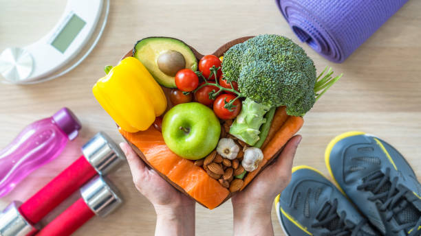

Discover practical ways to enhance your daily life. From organizing your home to achieving work-life balance, our lifestyle tips help you create a harmonious and productive environment. Learn how small changes in your habits can lead to significant improvements in happiness and efficiency.
Your health is your wealth! Explore our insights on physical fitness, mental health, and nutritional advice. Find expert-backed strategies to maintain a healthy lifestyle, manage stress, and stay motivated on your wellness journey.
